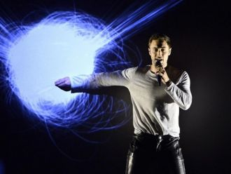

Your light is inside of meLike a raging roarLike an ocean bornYou're in my veinsYour voice is serenityWhen the Sun goes down
Gotta slow up, gotta shake this highGotta take a minute just to ease my mind'Cause if I don't walk then I'll get caught out
Face down in the mirrorMidnight mascara, down her eyeGot a new obsession, perfect lifeMy heart goes boom just a little bit
I've got fire for a heartI'm not scared of the darkYou've never seen it look so easyI got a river for a soulAnd baby you're a boat
Знаешь, это признаки любви,Если между нами притяженье.В зеркалах - сознанья отраженье.Из мечты -Только Ты,Только Ты.
Morandi - AngelsPeople..stop fighting, angels are cryingWe can be better, love is the answerSearch inside, are there anymore tears to cry ?
Я долго думал, кто же мыПросто пешки на доске или игрокиНо в вечном поиске любвиТак часто падали и мир на грани войны
И в красное восход. И блики на стекле. Привет, доброе утро. Открой настежь все окна. И пой, мне ветер, свою песню.
They say we're gonna crashWe've got so much to learn, our ways are childishWe're moving way too fastWe're risking our lives, we're young and selfish

Don't tell the gods I left a messI can't undo what has been doneLet's run for coverWhat if I'm the only hero leftYou better fire off your gun
Нагадала осень солнце на ладошкеГреет мою душу в час по чайной ложке.Подскажи дорогу, расскажи ему,Дай надежду, осень, сердцу, сердцу моему.
Oh yeahCome on
You get the limo out frontHottest styles, every shoe, every color
Облака гонят в осень туманНад водой золотой караванПо лесам заплутали дождиС ними я, до капели не жди
Зачем все эти признания, некстати.Скажи, мне бы было легче не знать, что ты врешь.И теперь навстречу бегут этажи, и мои кусочки, их не соберешь.
I know you're feeling restlessLike life's not on your sideIt's weighing heavy on your mind